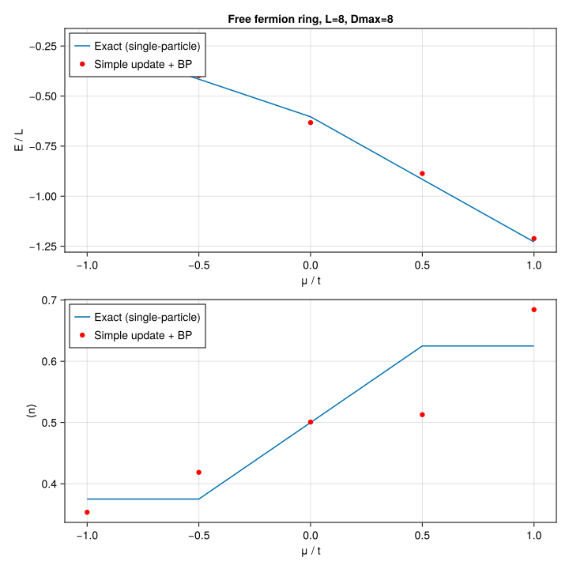

Free fermions on a ring
Imaginary-time evolution of spinless free fermions on a ring,
\[H = -t \sum_{\langle ij \rangle} \left( c^\dagger_i c_j + c^\dagger_j c_i \right) - \mu \sum_i n_i,\]
on a cycle graph (1D PBC), via simple update on top of belief-propagation messages. We sweep $\mu$ at fixed $t$, compute the ground-state energy per site $E/L$ and the filling $\langle n \rangle$, and compare against the exact single-particle solution at the same finite $L$.
This example can be run from the command line with:
julia --project=examples examples/free_fermion_ring/main.jlusing Canopy: randn_state, BPMessages, belief_propagation,
UndirectedEdge, LocalGate, apply!, reduced_density_matrix, expect,
Strang, trotterize, edge_coloring
using TensorKit
using TensorKitTensors.FermionOperators: f_num, f_hopping, fermion_space
using MatrixAlgebraKit: truncrank, trunctol
using Graphs: cycle_graph, edges, src, dst, nv
using Random
using Statistics: mean
using Printf
using CairoMakieExact single-particle reference
Spinless tight-binding on a length-$L$ PBC ring has dispersion $\varepsilon(k) = -2t \cos(k) - \mu$ at $k = 2\pi n / L$ for $n = 0, \dots, L-1$. The ground state fills every mode with $\varepsilon(k) < 0$; modes at $\varepsilon(k) = 0$ are left unfilled (a consistent convention at the band edge).
function exact_per_site(L::Int, μ::Real; t::Real=1.0)
εs = [-2t*cos(2π*n/L) - μ for n in 0:L-1]
filled = εs[εs .< 0]
return sum(filled) / L, length(filled) / L
endexact_per_site (generic function with 1 method)Random fermion ring state
function ring_state(L::Int, Dmax::Int; T::Type=ComplexF64)
g = cycle_graph(L)
@assert nv(g) == L
P = fermion_space(Trivial)
V = Vect[fℤ₂](0 => cld(Dmax, 2), 1 => fld(Dmax, 2))
ekeys = [UndirectedEdge(src(e), dst(e)) for e in edges(g)]
return randn_state(T, ekeys, P, V), ekeys
endring_state (generic function with 1 method)Free-fermion bond operators
We distribute the bond Hamiltonian across edges as
\[h_e = -t\, \mathrm{hop}_e - \frac{\mu}{\deg(u)}\, n \otimes I - \frac{\mu}{\deg(v)}\, I \otimes n,\]
so that $\sum_e h_e = H$ exactly. On a ring every vertex has degree 2.
function fermion_bond_hamiltonian(t::Real, μ::Real, deg_u::Int, deg_v::Int; T::Type=ComplexF64)
hop = f_hopping(T, Trivial)
n = f_num(T, Trivial)
I1 = id(fermion_space(Trivial))
return -t*hop - (μ/deg_u)*(n ⊗ I1) - (μ/deg_v)*(I1 ⊗ n)
endfermion_bond_hamiltonian (generic function with 1 method)Running a single (L, μ, Dmax) point
Each point is evolved with a Strang-split Trotter circuit over a decreasing-dτ schedule, re-converging the BP messages between sweeps.
const SCHEDULE = ((0.1, 30), (0.01, 30), (0.001, 20))
function run_one(L::Int, μ::Real, Dmax::Int; t::Real=1.0, seed::UInt=hash((L, μ, Dmax)))
Random.seed!(seed)
T = ComplexF64
state, ekeys = ring_state(L, Dmax; T)
msgs = BPMessages(state)
msgs = belief_propagation(msgs, state; maxiter=300)
h_e = fermion_bond_hamiltonian(t, μ, 2, 2; T)
bond_hams = Dict(e => h_e for e in ekeys)
alg = Strang(edge_coloring(keys(bond_hams)))
circuits = Dict(dτ => trotterize(bond_hams, dτ, alg) for (dτ, _) in SCHEDULE)
trunc = truncrank(Dmax) & trunctol(; atol=0.0)
for (dτ, nsteps) in SCHEDULE
circuit = circuits[dτ]
for i in 1:nsteps
apply!(state, msgs, circuit; trunc)
mod(i, 10) == 0 && (msgs = belief_propagation(msgs, state; maxiter=200))
end
end
E = sum(real(expect(state, msgs, h_e, e)) for e in ekeys)
n_op = f_num(T, Trivial)
nbar = mean(real(expect(state, msgs, n_op, v)) for v in 1:L)
return E / L, nbar
endrun_one (generic function with 1 method)Scan and plot
Sweep $\mu$, run the simple-update point at each value, and overlay the result on the exact single-particle curve for both the energy per site and the filling.
function main(; L::Int=8, Dmax::Int=8, μs=range(-1.0, 1.0; length=5), t::Real=1.0)
E_su = similar(collect(μs), Float64); n_su = similar(collect(μs), Float64)
E_ex = similar(collect(μs), Float64); n_ex = similar(collect(μs), Float64)
println("Free fermion ring L=$L Dmax=$Dmax t=$t")
@printf " %-6s %-13s %-13s %-13s %-13s\n" "μ" "E/L (SU)" "E/L (exact)" "⟨n⟩ (SU)" "⟨n⟩ (exact)"
for (i, μ) in enumerate(μs)
E_ex[i], n_ex[i] = exact_per_site(L, μ; t)
E_su[i], n_su[i] = run_one(L, μ, Dmax; t)
@printf " %-6.3f %-13.8f %-13.8f %-13.8f %-13.8f\n" μ E_su[i] E_ex[i] n_su[i] n_ex[i]
flush(stdout)
end
fig = Figure(size=(720, 720))
ax1 = Axis(fig[1, 1]; xlabel="μ / t", ylabel="E / L",
title="Free fermion ring, L=$L, Dmax=$Dmax")
lines!(ax1, collect(μs), E_ex; label="Exact (single-particle)")
scatter!(ax1, collect(μs), E_su; label="Simple update + BP", color=:red)
axislegend(ax1; position=:lt)
ax2 = Axis(fig[2, 1]; xlabel="μ / t", ylabel="⟨n⟩")
lines!(ax2, collect(μs), n_ex; label="Exact (single-particle)")
scatter!(ax2, collect(μs), n_su; label="Simple update + BP", color=:red)
axislegend(ax2; position=:lt)
outdir = joinpath(@__DIR__, "figs"); mkpath(outdir)
outfile = joinpath(outdir, "free_fermion_ring.svg")
save(outfile, fig)
println("wrote $outfile")
return fig
end
main()Free fermion ring L=8 Dmax=8 t=1.0
μ E/L (SU) E/L (exact) ⟨n⟩ (SU) ⟨n⟩ (exact)
-1.000 -0.21328787 -0.22855339 0.35345530 0.37500000
-0.500 -0.39790175 -0.41605339 0.41857647 0.37500000
0.000 -0.63277601 -0.60355339 0.50072010 0.50000000
0.500 -0.88702298 -0.91605339 0.51286343 0.62500000
1.000 -1.21169300 -1.22855339 0.68434105 0.62500000
wrote /mnt/home/ldevos/Projects/Canopy/main/docs/src/examples/free_fermion_ring/figs/free_fermion_ring.svg

This page was generated using Literate.jl.